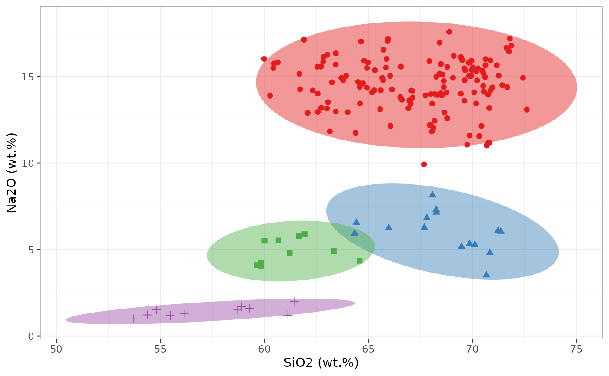

Confidence Ellipse
confidence-ellipse.RmdA confidence ellipse is a graphical representation that shows the variability or uncertainty in estimates of the mean values of two normally distributed variables in a bivariate dataset. It is an extension of the concept of a confidence interval, which is used for a single variable. The ellipse is centered at the point representing the sample mean values of the two variables. Its size and shape are determined by the chosen confidence level (e.g., 95%) and the covariance matrix of the variables.
data(glass, package = "ConfidenceEllipse")Coordinate points
The confidence_ellipse function is used to compute the
coordinate points of the confidence ellipse and then the ellipse is
plotted on a two-dimensional plot x and y of
the data. Points that lie within the ellipse are considered to be part
of the underlying distribution with the specified confidence level
conf_level.
ellipse_99 <- confidence_ellipse(glass, x = SiO2, y = Al2O3, conf_level = 0.99)
ellipse_95 <- confidence_ellipse(glass, x = SiO2, y = Al2O3, conf_level = 0.95)
ellipse_90 <- confidence_ellipse(glass, x = SiO2, y = Al2O3, conf_level = 0.90)
ellipse_99 %>% glimpse()
#> Rows: 361
#> Columns: 2
#> $ x <dbl> 54.39806, 54.39735, 54.40034, 54.40703, 54.41742, 54.43149, 54.44926…
#> $ y <dbl> 2.798453, 2.771520, 2.744243, 2.716628, 2.688685, 2.660423, 2.631849…
ggplot() +
geom_path(data = ellipse_99, aes(x = x, y = y), color = "red", linewidth = 1L) +
geom_path(data = ellipse_95, aes(x = x, y = y), color = "blue", linewidth = 1L) +
geom_path(data = ellipse_90, aes(x = x, y = y), color = "green", linewidth = 1L) +
geom_point(data = glass, aes(x = SiO2, y = Al2O3), color = "black", size = 3L) +
scale_color_brewer(palette = "Set1", direction = 1) +
xlim(50, 80) +
ylim(-.5, 5) +
labs(x = "SiO2 (wt.%)", y = "Al2O3 (wt.%)") +
theme_bw() +
theme(legend.position = "none")Grouping
For grouping bivariate data, the .group_by argument can
be used if the data contains an unique grouping variable
(.group_by = NULL by default). When a grouping variable is
provided, the function will compute the ellipses separately for each
level of the factor. It’s important to note that the grouping variable
should be appropriately coded as a factor before passing it to the
.group_by argument. If the variable is currently stored as
a character or numeric type, you may need to convert it to a factor
using functions like as.factor() or
forcats::as_factor().
ellipse_grp <- confidence_ellipse(glass, x = SiO2, y = Na2O, .group_by = glassType)
ellipse_grp %>% glimpse()
#> Rows: 1,444
#> Columns: 3
#> $ x <dbl> 59.59996, 59.59948, 59.60135, 59.60557, 59.61214, 59.62106, …
#> $ y <dbl> 14.71814, 14.65429, 14.59039, 14.52647, 14.46255, 14.39864, …
#> $ glassType <fct> 1, 1, 1, 1, 1, 1, 1, 1, 1, 1, 1, 1, 1, 1, 1, 1, 1, 1, 1, 1, …
ggplot() +
geom_polygon(data = ellipse_grp, aes(x = x, y = y, fill = glassType), alpha = .45) +
geom_point(data = glass, aes(x = SiO2, y = Na2O, color = glassType, shape = glassType), size = 2L) +
scale_fill_brewer(palette = "Set1", direction = 1) +
scale_color_brewer(palette = "Set1", direction = 1) +
labs(x = "SiO2 (wt.%)", y = "Na2O (wt.%)") +
theme_bw() +
theme(legend.position = "none")